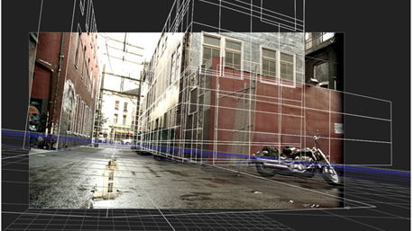

ModelBuilder 节点提供了一种为 2D 快照创建 3D 模型的简单方法。您可以通过创建形状然后编辑模型来构建模型，并通过将顶点拖动到相应的 2D 位置来对齐模型。
为了能够对齐模型，ModelBuilder 需要一个跟踪摄像头和一个用于视觉参考的输入图像。如果场景中已经有其他 3D 几何图形和点云，也可以使用它们作为参考。
注意: 您可以使用 ModelBuilder，而无需相机、图像序列或参考几何图形。在这种情况下，所有编辑模式功能都可以正常工作; 这只是意味着你不能在对齐模式下做任何事情。
使用 ModelBuilder 创建和编辑模型需要 NukeX 许可证，但生成的几何图形也可以用于 核武器 .
|
 |
|
使用 ModelBuilder 创建的形状的二维源图像。 |
特别感谢 对于上述镜头的使用，在本章中使用。
以下是工作流的快速概述:
| 1。 | 将 ModelBuilder 节点连接到您的镜头和不断变化的相机。有关更多信息，请参见 连接 ModelBuilder 节点 . |
| 2. | 作为模型的起点，使用查看器左侧的工具栏创建一个或多个内置 3D 形状。 |
请参阅 创建形状 .
| 3. | 如有必要，调整形状的显示特征，以便在查看器中更好地看到它们。你可以在这个过程中的任何时候做到这一点。 |
请参阅 编辑形状的显示特征 .
| 4. | 使用 2D 素材或现有 3D 几何图形作为参考来定位形状。 |
请参阅 定位形状 .
| 5. | 编辑形状，直到你对你的模型满意。 |
请参阅 编辑形状 .
| 6. | 一旦你对你的模型感到满意，你就准备好对它进行纹理处理了。 |
请参阅 应用纹理 .
| 7. | 如有必要，您还可以为选定的形状创建一个单独的几何节点，并像在中使用任何其他几何节点一样使用它 核武器 . |
请参阅 将形状导出到单独的几何节点 .
|
|